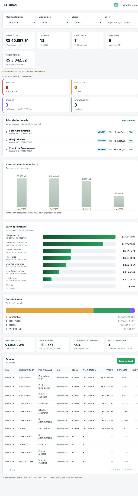
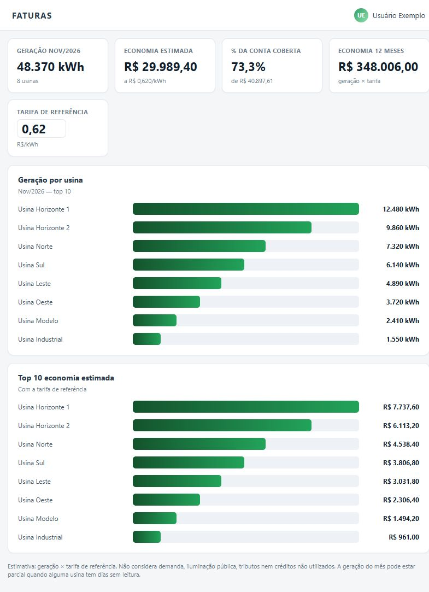

Lê os PDFs
Extrai valor, consumo, vencimento e unidade consumidora; usa OCR quando o PDF é digitalizado.
Case · automação interna
Um painel offline que lê os PDFs das distribuidoras, confere o que foi emitido, sinaliza cobranças fora do padrão e estima a economia de uma usina solar.
A conferência era manual: baixar dezenas de PDFs por mês, abrir um por um, lançar valor, consumo e vencimento em planilha e comparar com o que a distribuidora dizia ter emitido. Qualquer fatura faltando só aparecia quando a conta atrasava.
Além disso, a decisão sobre a usina solar dependia de cruzar consumo, compensação e tarifa em outra aba — longe do lugar onde a fatura era lida.
Extrai valor, consumo, vencimento e unidade consumidora; usa OCR quando o PDF é digitalizado.
Compara o que foi emitido com o que foi entregue e aponta fatura ausente por unidade e mês.
Demanda excedida, juros, encargos e bandeira fora do padrão viram prioridade no painel.
Cruza consumo e compensação para mostrar a economia potencial de cada unidade.
painel HTML offline
O painel é um arquivo HTML que abre com duplo clique, sem servidor e sem internet. A rotina diária só exige rodar um comando: o restante é automático.


O código é privado porque lida com a operação de energia de uma empresa. As capturas usam dados fictícios. Uma demonstração guiada pode ser feita sob solicitação.